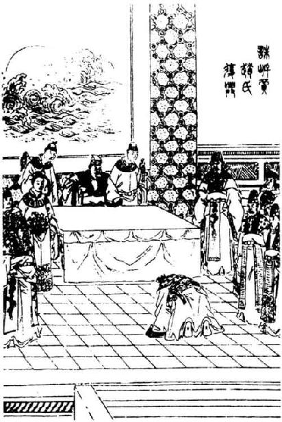

田儋 者，狄 人也，故齐王田氏 族也。儋 从弟田荣 ，荣 弟田横 ，皆豪，宗强，能得人。
陈涉 之初起王楚 也，使周巿 略定魏 地，北至狄 ，狄 城守。田儋 详为缚其奴，从少年之廷，欲谒杀奴。见狄 令，因击杀令，而召豪吏子弟曰：“诸侯皆反秦 自立，齐 ，古之建国，儋 ，田氏 ，当王。”遂自立为齐王 ，发兵以击周巿 。周巿 军还去，田儋 因率兵东略定齐 地。
秦 将章邯 围魏王咎 于临济 ，急。魏王 请救于齐 ，齐王田儋 将兵救魏 。章邯 夜衔枚击，大破齐 、魏 军，杀田儋 于临济 下。儋 弟田荣 收儋 馀兵东走东阿 。
齐
人闻王田儋
死，乃立故齐王建
之弟田假
为齐王
，田角
为相，田閒
为将，以距诸侯。
田荣 之走东阿 ，章邯 追围之。项梁 闻田荣 之急，乃引兵击破章邯 军东阿 下。章邯 走而西，项梁 因追之。而田荣 怒齐 之立假 ，乃引兵归，击逐齐王假 。假 亡走楚 。齐 相角 亡走赵 ；角 弟田閒 前求救赵 ，因留不敢归。田荣 乃立田儋 子巿 为齐王 ，荣 相之，田横 为将，平齐 地。
项梁 既追章邯 ，章邯 兵益盛，项梁 使使告赵 、齐 ，发兵共击章邯 。田荣 曰：“使楚 杀田假 ，赵 杀田角 、田閒 ，乃肯出兵。”楚怀王 曰：“田假 与国之王，穷而归我，杀之不义。”赵 亦不杀田角 、田閒 以市于齐 。齐 曰：“蝮螫手则斩手，螫足则斩足。何者？为害于身也。今田假 、田角 、田閒 于楚 、赵 ，非直手足戚也，何故不杀？且秦 复得志于天下，则 龁用事者坟墓矣。”楚 、赵 不听，齐 亦怒，终不肯出兵。章邯 果败杀项梁 ，破楚 兵，楚 兵东走，而章邯 渡河 围赵 于钜鹿 。项羽 往救赵 ，由此怨田荣 。
项羽 既存赵 ，降章邯 等，西屠咸阳 ，灭秦 而立侯王也，乃徙齐王田市 更王胶东 ，治即墨 。齐 将田都 从共救赵 ，因入关，故立都 为齐王 ，治临淄 。故 齐王建 孙田安 ，项羽 方渡河 救赵 ，田安 下济北 数城，引兵降项羽 ，项羽 立田安 为济北王 ，治博阳 。田荣 以负项梁 不肯出兵助楚 、赵 攻秦 ，故不得王；赵 将陈馀 亦失职，不得王：二人俱怨项王 。
项王 既归，诸侯各就国，田荣 使人将兵助陈馀 ，令反赵 地，而荣 亦发兵以距击田都 ，田都 亡走楚 。田荣 留齐王巿 ，无令之胶东 。巿 之左右曰：“项王 强暴，而王当之胶东 ，不就国，必危。”巿 惧，乃亡就国。田荣 怒，追击杀齐王巿 于即墨 ，还攻杀济北王安 。于是田荣 乃自立为齐王 ，尽并三齐 之地。
项王
闻之，大怒，乃北伐齐
。齐王田荣
兵败，走平原
，平原
人杀荣
。项王
遂烧夷齐
城郭，所过者尽屠之。齐
人相聚畔之。荣
弟横
，收齐
散兵，得数万人，反击项羽
于城阳
。而汉王
率诸侯败楚
，入彭城
。项羽
闻之，乃释齐
而归，击汉
于彭城
，因连与汉
战，相距荥阳
。以故田横
复得收齐
城邑，立田荣
子广
为齐王
，而横
相之，专国政，政无巨细皆断于相。
横 定齐 三年，汉王 使郦生 往说下齐王广 及其相国横 。横 以为然，解其历下 军。汉 将韩信 引兵且东击齐 。齐 初使华无伤 、田解 军于历下 以距汉 ，汉 使至，乃罢守战备，纵酒，且遣使与汉 平。汉 将韩信 已平赵 、燕 ，用蒯通 计，度平原 ，袭破齐历下 军，因人临淄 。齐王广 、相横 怒，以郦生 卖己，而烹郦生 。齐王广 东走高密 ，相横 走博 ，守相田光 走城阳 ，将军田既 军于胶东 。楚 使龙且 救齐 ，齐王 与合军高密 。汉 将韩信 与曹参 破杀龙且 ，虏齐王广 。汉 将灌婴 追得齐 守相田光 。至博 ，而横 闻齐王 死，自立为齐王 ，还击婴 ，婴 败横 之军于嬴 下。田横 亡走梁 ，归彭越 。彭越 是时居梁 地，中立，且为汉 ，且为楚 。韩信 已杀龙且 ，因令曹参 进兵破杀田既 于胶东 ，使灌婴 破杀齐 将田吸 于千乘 。韩信 遂平齐 ，乞自立为齐 假王，汉 因而立之。
后岁馀，汉 灭项籍 ，汉王 立为皇帝，以彭越 为梁王 。田横 惧诛，而与其徒属五百馀人入海，居岛中。高帝 闻之，以为田横 兄弟本定齐 ，齐 人贤者多附焉，今在海中不收，后恐为乱，乃使使赦田横 罪而召之。田横 因谢曰：“臣烹陛下之使郦生 ，今闻其弟郦商 为汉 将而贤，臣恐惧，不敢奉诏，请为庶人，守海岛中。”使还报，高皇帝 乃诏卫尉郦商 曰：“齐王田横 即至，人马从者敢动摇者致族夷！”乃复使使持节具告以诏商 状，曰：“田横 来，大者王，小者乃侯耳；不来，且举兵加诛焉。”田横 乃与其客二人乘传诣雒阳 。
未至三十里，至尸乡 厩置，横 谢使者曰：“人臣见天子当洗沐。”止留。谓其客曰：“横 始与汉王 俱南面称孤，今汉王 为天子，而横 乃为亡虏而北面 事之，其耻固已甚矣。且吾烹人之兄，与其弟并肩而事其主，纵彼畏天子之诏，不敢动我，我独不愧于心乎？且陛下所以欲见我者，不过欲一见吾面貌耳。今陛下在洛阳 ，今斩吾头，驰三十里间，形容尚未能败，犹可观也。”遂自刭，令客奉其头，从使者驰奏之高帝 。高帝 曰：“嗟乎，有以也夫！起自布衣，兄弟三人更王，岂不贤乎哉！”为之流涕，而拜其二客为都尉，发卒二千人，以王者礼葬田横 。
既葬，二客穿其冢旁孔，皆自刭，下从之。高帝
闻之，乃大惊，以田横
之客皆贤。“吾闻其馀尚五百人在海中”，使使召之。至则闻田横
死，亦皆自杀。于是乃知田横
兄弟能得士也。
太史公 曰：甚矣！蒯通 之谋。乱齐 骄淮阴 ，其卒亡此两人！蒯通 者，善为长短说，论战国 之权变，为八十一首。通 善齐 人安期生 ，安期生 尝干项羽 ，项羽 不能用其策。已而项羽 欲封此两人，两人终不肯受，亡去。田横 之高节，宾客慕义而从横 死，岂非至贤！余因而列焉。不无善画者，莫能图，何哉？